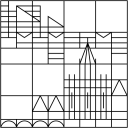

The argument against neutrality about the size of population David Pomerenke Supervised by Stefan Fischer Jacob Rosenthal A thesis presented for the degree of Bachelor of Arts
 Department of Philosophy University of Konstanz Germany December 2019
How should we as a society value changes in population size? The question
may be crucial when evaluating global warming scenarios. I defend the
intuition of neutrality, which answers a part of the question. It states that –
other things being equal – it is ethically irrelevant whether or not additional
people are added to a population. The argument against neutrality criticizes
the intuition of neutrality as inconsistent.
The contribution of this thesis is twofold: First, the framework of welfare
economics, the intuition of neutrality, and the argument against neutrality are
presented with formal rigour. Second, the formalizations will be used for a
critical analysis of the argument against neutrality. Three ethical frameworks
will be assumed – the difference principle, average utilitarianism, and
contractarianism –, and their relation to the explicit and hidden premises of
the argument against neutrality will be investigated.
The result will be that all three frameworks are compatible with the intuition
of neutrality (or slightly modified versions); so the argument against neutrality
does not hold within them.
The analysis is built on several controversial philosophical views and does
not necessarily disprove the argument against neutrality. Rather, it undermines
the authority of the argument by pointing out the weakness of several
premises within the three frameworks.
I begin by briefly introducing the framework of welfare economics, which
this essay argues within. I then present in more detail the intuition of neutrality
and the formal argument brought forward against it. The main part is
dedicated to the development of three lines of argumentation in opposition
to the argument against neutrality (thus defending the intuition of
neutrality). I conclude with a systematic summary of the three lines of
argumentation.
Chapter 1 Exposition
1.1 Welfare Economics
Welfare economics is the theory how individual well-being should be
aggregated to general well-being (or welfare). General well-being drives
decisions in the welfare state. The theory is relevant for the execution as well
as the design of economic policies. As in democracies the citizens and their
representatives take part in the design process, welfare economics is subject
to societal discourse in these nations. Within this discourse, citizens and media
often do not only claim their own interests. Instead they also refer to ethical
principles which are to guide democratic policy decisions. This essay is set
within this democratic discourse and aims to defend a supposedly
widespread intuition whose consistency has been challenged from the
academic side.
The core of welfare economics is the welfare function (see Harsanyi,
1955, p. 309). It is an aggregation function: a function which takes in
the individual levels of well-being of several individual persons, and
delivers the level of welfare for the whole aggregated population
comprising these individual persons. Well-being and welfare (which refers to
aggregated well-being) are abstract terms. They are usually interpreted as a
representation derived from a person’s preferences about different lives
(cf. Crisp, 2017, ch. 4.2). But they can also be interpreted simply as
hedonic levels of lifetime pleasure (Crisp, 2017, ch. 4.1), which will
be sufficient for the purpose of this thesis. Well-being (or utility) of a
person p is denoted by u(p); individual persons are denoted by pi – the
subscript is just there to differentiate between different persons. In
similar fashion, welfare of a population P = {p1,p2,…,pn} is denoted by
u(P).
The content of the general welfare function is intentionally unspecified.
The function is just a vehicle for discussion within welfare economics. Several
specific welfare functions have been proposed and we will deal with two of
them in later sections. For example, the classical utilitarian welfare function
states that welfare is simply the sum u(p1) + u(p2) +… + u(pn) of all individual
well-being.
I introduce welfare functions because they are precise formalizations of
competing ethical beliefs. In sections 2.1 and 2.2, I will make use of them in
order to demonstrate that when we assume certain ethical intuitions, the
argument against neutrality does not hold. I will present two widespread
competing ethical belief systems – average utilitarianism, and the difference
principle – and try to refute the argument against neutrality from each of
these views. The idea is that many people will adhere to one of these
principles so that they can agree with at least one of the refutations. (Section
2.3 is of a different kind because, rather than to specific welfare functions, it
relates to their justification.)
It should be briefly noted that welfare economics are blind – and so will be
this discussion – in that they are consequentialist. This means that they only
evaluate actions by their outcome and in this context specifically by their
impact on general welfare or goodness. Other elements of ethical
evaluation, such as the procedural requirements of justice, will have to be
considered separately (cf. Broome, 2005, p. 401; Broome, 2012, p. 99f). These
separate considerations will often require consequentialist considerations as
part of their theoretical foundation, so this discussion may be indirectly
relevant for them.
1.2 The intuition of neutrality
The intuition of neutrality is assumed to be a widespread ethical intuition
among humans (Broome, 2012, p. 176f). The content of the intuition is called
the principle of equal existence (Broome, 2004, p. 146), but usually (and also
in this thesis) the term ’intuition’ is used to refer both to the empirical
intuition of neutrality and to the propositional content of the intuition of
neutrality.
The content of the intuition is defined as follows: Let us assume two
hypothetical scenarios A and B. The same people exist in both scenarios,
except that in scenario B there are some additional people which do not
exist in scenario A. The intuition says: Which one of the scenarios is better
depends entirely on the well-being of the people who exist in both
scenarios, and not at all on the additional people who only exist in B –
as long as all the additional people in B have a well-being within a
certain neutral range. More specifically, as long as the additional
people in B are within the neutral range, scenario A is better in terms of
welfare if the people who exist in both populations have a higher
welfare in scenario A, and scenario B is better in terms of welfare if the
people who exist in both populations have a higher welfare in scenario
B.
We can formalize the scenarios as different welfare distributions
represented by the welfare functions uA and uB (read: u under thecircumstances of scenario A, and u under the circumstances of scenario B).
Let P0 be a population of people who exist in both scenarios but need not
have the same levels of well-being in both scenarios. Let P+ be the
population of people who exist only in scenario B. Let [u1,u2] be the neutral
range of well-being for added people.
The formalization is to be interpreted in the following way: It does not
matter in terms of welfare whether there exists an additional person in the
population who lives at a moderate level of well-being. There are
several moderate levels of well-beings, which form a range between a
low moderate level of well-being u1 and a high moderate level of
well-being u2. If however the additional person is at a very low level of
well-being – below u1 – then the person might matter for the calculation of
general well-being. (Arguably, the welfare would decrease because
of the added person; though this is not specified by the intuition.)
Similarly, if the additional person is at a very high level of well-being –
above u2 – then the person might matter for the calculation of general
well-being. (Arguably, the welfare would increase because of the added
person.)
There is a specification of the intuition of neutrality where the neutral range
has no upper limit, i. e., u2= ∞(Broome, 2012, p. 113). This may be an
accurate of common belief. Whether the upper limit of the range is finite or
infinite is of minor concern for this thesis; it is more important to note that there
is some neutral range.
If the range is sufficiently large, this might simplify welfare calculations, as
the following examples demonstrate:
An exemplary application of the intuition is the evaluation of road safety
(Broome, , p. 144f). In this context, the deaths of people dying in accidents
must be weighed against the costs of preventing them. Whilst this is
an ethically difficult problem on its own, one important long-term
effect is usually left aside: The well-being of the expected potential
offspring of the potentially dying person is completely neglected.
One possible justification is the intuition of neutrality: According to the
intuition, if we can expect the offspring to live within the neutral range
of well-being, it is neither positive nor negative whether they exist or
not.
A second example is the evaluation of different scenarios of global warming
(Broome, 2012, p. 170). Global warming is likely to kill many people and
thereby to prevent their offspring from existing. On the other hand, global
warming may increase poverty, which is associated with higher birth rates.
Thanks to the intuition of neutrality we can simply leave both of these effects
aside in many of our evaluations – which comes handy as predictions in these
domains attend to an enormous amount of uncertainty. Broome, 2012,
p. 120ff. sees massive problems if the intuition of neutrality cannot be
assumed to apply.
It is important to understand that the intuition of neutrality does not imply
neutrality about the consequences on the existing population which are
caused by the additional population. These consequences may be negative
or positive, leading to contrary political reactions such as China’s restrictive
one-child-policy and Europe’s reproduction-promoting policy (Broome, 2012,
p. 169). The consequences on the existing population may well determine
whether additional people are good or not. Only the well-being of the
additional people themselves does not do so according to the intuition of
neutrality.
The question whether the intuition of neutrality is in fact a widespread
intuition among humans appears not to have been investigated. It is not
necessary for the argument against neutrality to assume such an empirical
fact. Neither is it necessary for the refutation of this argument to assume so. If
however this refutation were successful and the integrity of the intuition thus
restored, then it would be desirable to investigate the empirical prevalence
of the intuition.
1.3 The argument against neutrality
The argument against (the intuition of) neutrality (described in Broome, 2012,
p. 176f) concludes that the intuition of neutrality is inconsistent. The argument
is a version of the mere addition paradox (Broome, 2004, p. 148) and a
modification of the adoption problem (Broome, 2004, p. 161). The
argument against neutrality takes the logical form of a reduction to theabsurd: It assumes that the intuition of neutrality applies, deduces a
contradiction, and thus concludes that the intuition is incorrect. This section
summarizes and formalizes the argument as stated in ?, ?, Broome,
2012.
The deduction of the contradiction is based on the following
counterexample:
roome˙2012!
There are three scenarios A, B and C. They share the same population,
except that one additional person exists in both B and C. In both B and C the
additional person has a level of well-being within the neutral range. The
argument is structured into two major steps:
First, scenario A is being compared to scenario B and to scenario C. The
additional person can be neglected in this step because the person is within
the neutral range. There is one person who is a little bit better off in scenario B
than in scenario A. As all other persons have exactly the same level of
well-being, it is reasonable that there is a higher welfare in scenario B
than in scenario A. Contrarily, there is one person who is a little bit
worse off in scenario C than in scenario A. As all other persons have
exactly the same level of well-being, it is reasonable that there is a
higher welfare in scenario A than in scenario C. As a consequence of
these two observations, scenario B has a higher welfare than scenario
C. Technically, this conclusion requires transitivity of the betterness
relation.
Second, scenario B is compared directly to scenario C. Both scenarios
comprise the same people, so there is no additional person in either scenario
who could be neglected. The person who is not present in scenario A and
has therefore been neglected above is much better off in scenario C
than in scenario B. This big difference clearly outweighs the difference
of the other person’s well-being in favour of scenario B. As there is
moreover a lower inequality in scenario C, scenario C has a higher welfare
than scenario B. This is in contradiction to the result of step one, so the
counter-example refutes the intuition of neutrality, which has been its core
assumption.
Whilst the argument above is intuitively plausible, it has two other
important premises
b
 177f
First, if in two scenarios all persons have the same level of well-being except
for one person who is better off in the second scenario, then the welfare in
the second scenario is higher than in the first. Technically, we can say that the
second scenario Pareto dominates the first (Osborne, . (I will come back to
this notion in section 2.1.)
Second, if in two scenarios with the same population the sum of individual
well-being is higher in the second scenario, and at the same time the
inequality of the distribution of well-being is lower in the second scenario,
then the second scenario is better in terms of welfare than the first. I call this
the fair aggregation principle.
There are various ways to measure inequality, and the details need not
concern us here. An excellent survey of one-dimensional inequality measures
– as applied in welfare economics – is given in Sen & Foster, 1997. The most
prominent inequality measure is probably the Gini coefficient (see Ceriani &
Verme, 2012). Both of these premises appear to be very plausible,
and they are dubbed ”hard-to-doubt assumptions” in Broome, 2012,
p. 176.
The following proof concisely sums up the argument presented above. It
makes use of the technical premises (P...) and the assumptions that make up
the setting of the counter-example (A...). We can infer from the contradiction
in (C8) that at least one of the premises and assumptions must be
false. The assumptions merely describe the setting of the scenarios as
depicted in the figure above. They are simply the assumptions making up
the counter-example and there is no reason to doubt them within
this proof. Moreover, premises (P2), (P3) and (P4) appear to be very
plausible. As a consequence, the intuition of neutrality must be the false
premise.
There are two major implications if this argument holds and the intuition of
neutrality is inconsistent (cf. Broome, 2005, p. 411:
1.
We as a society would have to develop a different, consistent
principle to replace the intuition. We do not even currently know
whether population changes should be evaluated as positive or as
negative, just that they cannot simply be evaluated as neutral. The
finding of a new principle with wide acceptance would certainly
present a major societal task and require many years of discourse.
2.
As soon as we had found a suitable principle, we would need to gain
better knowledge of which actions lead to which consequences
with respect to population changes. Only then would we probably
be able to apply a principle which is not based on neutrality. This
requires new scientific analysis and simulation because such predictions
have often been omitted in the past (Broome, , p. 402; Broome, 2012,
p. 115f).
Broome, 2004 develops five possible responses to the argument against
neutrality (see the overview on p. 149). Accordingly, one of the following
alternative propositions could be embraced:
(a)
intransitivity of the betterness relation
(b)
conditional goodness
(c)
relative goodness
(d)
indeterminacy or vagueness of the betterness relation
(e)
a single neutral level
The transitivity of the betterness relation (P2) is plausibly defended in (a) –
see Broome, 2004, p. 151f. (P3) and (P4) have not been discussed so far. This is
what I will do in section 2.1. Section 2.2 will be very similar to what Broome,
2004 develops with regard to proposition (d), but it will also be compatible
with proposition (e). I will pursue a somewhat related approach to (b) and (c)
in section 2.3.
Chapter 2 Critical analysis
2.1 Aggregation and justice
I will start by delivering some general criticism on Pareto domination and
aggregation and then continue to examine their relation to justice-oriented
welfare functions, specifically the Maximin and Leximin rule.
When we say that a scenario Pareto dominates another scenario, we
mean that at least one person is better off in this scenario than in the other
while all other persons are at an equal level of well-being. The Pareto
principle I have formulated as (P2) says that in such cases the first scenario
has a higher welfare than the other one. This principle, as well as the
extending requirement of Pareto efficiency (cf. Osborne, 1997), find their due
place in economics where the objective is the efficient allocation of scarce
resources (Samuelson & Nordhaus, 2010, p. 4; Lange, 2019). However I doubt
that they are suitable as ethical principles. Pareto efficiency has been
criticized because the liberal paradox suggests that it may be incompatible
with procedural elements of liberalism (see Sen & Foster, 1997). But I
believe that there is a more general problem with Pareto efficiency
and even with Pareto domination: Consider a large population with
one person whose well-being is much higher than the well-being of
the others. Is it ethically desirable – is there a higher welfare – if the
welll-being of this person is increased even more, while the well-being of
the other persons remains the same? This can be intuitively doubted,
and below I show some mildly convincing reasoning in favour of this
doubt.
A similar criticism applies to what I have called the fair aggregation
principle. The fair aggregation principle is a combination of what can be
called the simple aggregation principle – that general welfare is the simple
sum of all individual well-being – with the additional requirement that
distributions need be more equal to have a higher welfare. The principle is
non-exhaustive: it does not tell us anything about populations with a
higher sum of well-being and a lower equality, and it does not tell us
anything about populations with a lower sum of well-being and a
higher equality. But that is not a problem, since such populations do
not play a relevant role in the counter-example to the intuition of
neutrality.
The problem with the requirement of equality is that, analytically, equality
is a global criterion, which means that it somehow takes into account the
well-being of every single person. This implies that a small decrease ùúñ
in well-being of the person who already is worst off can always be
compensated by some large increase of equality within the rest of
the population. This follows because otherwise the well-being of the
worst-off person would completely determine the equality – which is
intuitively plausible, but not incorporated in the conception of inequality
measures.
Now imagine three scenarios, all with the same people: In scenario X
there is some utility distribution with lots of inequality. The person who is worst
off in scenario X is called p. In scenario Y, the well-being of the worst-off
person from scenario X is decreased by some very small amount ùúñ. Due to the
globality of inequality, this can be compensated in terms of equality
by improving the equality within all the other persons to a more or
less drastical amount. Let us assume that such compensation has
taken place, so that the overall equality in scenario Y is higher than in
scenario X. With the usual inequality functions this will be possible without
decreasing the sum of well-being (cf. Ceriani & Verme, 2012). Let us
further assume that in a third scenario Z all people are at the same
level of well-being as the people in scenario Y, plus . The general
equality has not decreased in Z in comparison to Y. (Depending on
the inequality function, it may even have increased, because the
relative differences between the least well-off and the most well-off
have decreased.) However the sum of well-being is increased in Z in
comparison to X because the well-being of many persons has been
increased by while the well-being of only one person has been
decreased by . As a consequence, both the sum of individual well-being
and the equality are better in Z than in X, so according to the fair
aggregation principle there is a higher welfare in Z than in X. At the
same time, the worst-off person in X is even worse off in Z. This seems
intuitively implausible and I will now present a theory which explains this
implausibility.
For this objection I will use as a specific welfare function the difference
principle. The difference principle is a concept which is inferred from an
analysis of justice. Its justification as the second principle of justice is given
and extensively discussed in (Rawls, 2005, pp. 3-183). Rivalling average
utilitarianism, the difference principle is probably the most prominent
and most widely accepted welfare function. In its core formula, the
difference principle states that differences from socioeconomic equality
are only permitted if they are to the benefit of the least advantaged
(Rawls, 2005, p. 302). This implies that society should aim to optimize the
status of the least advantaged. The difference principle is therefore
usually represented as a welfare function where general welfare is
determined only by the well-being of the group with the lowest level of
well-being. (Such representation commits a major error in ignoring
the difference between primary goods and well-being as I discuss in
Pomerenke, 2017, p. 12f. – But this does not bear upon the reasoning here,
which is based solely on Pareto comparisons.) Whilst the difference
principle refers to the least advantaged group – which makes sense in
application – there is no mistake in referring to the least advantaged
person for the sake of theory (cf. (Rawls, 2005, p. 98)). Because of its
resemblance to the decision-theoretic rule of minimum maximization, this
formulation of the principle has also been called the Maximin rule.
(Although this labelling has been rightly criticized in Rawls & Kelly, 2001,
p. 43..)
According to the difference principle in its Maximin version, both Pareto
domination and fair aggregation are false: Imagine that one person who is
not the worst-off in either scenario is better off in the first scenario than in
the second while all other persons are equally well off. Then Pareto
domination requires that the first scenario has a higher welfare. The
Maximin rule, however, states that both scenarios have the same welfare
because the well-being of the worst-off person has not changed. And
we have seen above that as a consequence of fair aggregation a
scenario may be evaluated as having a higher welfare even if the
worst-off person is even worse off – in strict contradiction to the difference
principle.
But the difference principle in its Maximin formulation has been designed
as a simplification with the practical idea in mind that there will seldom
or never be a comparison in which the least advantaged will have
the exactly same level of well-being in both scenarios. Yet for the
theoretical case of a such comparison a more elaborate rule than
the Maximin rule has been developed (cf. Rawls, 2005, p. 83): It says
that in the case that the least advantaged are at the same level in
both scenarios, the second-least advantaged must be regarded.
And if the second-least advantaged are also at the same level, then
the third-least advantaged must be regarded, and so on. Because it
resembles a lexicographical sorting algorithm, the extended rule is
called the Leximin rule. It is most clearly formulated as a recursive
selection function which outputs the better population of two populations
whose members are sorted in ascending order according to their
well-being:
We can easily observe that – unlike the Maximin rule – the Leximin
rule is compatible with Pareto domination: If all persons are equal in
two scenarios except one who is better off in the second scenario,
then the Leximin algorithm will recursively call another instance of the
Leximin algorithm (where the worst-off from the outer instance will be
disregarded), until an instance is called where the two persons in questions
are the worst-off persons in their respective scenarios. This process
automatically ensures Pareto domination. So at a second glance
at the difference principle, it does not contradict but indeed rather
support Pareto domination. This is in favour of the argument against
neutrality.
The same, however, cannot be said about the relation of the difference
principle to the principle of fair aggregation. We have seen above
that fair aggregation in some cases evaluates distributions as being
better than a second distribution even though the worst-off person
is better off in the second distribution. In such a case, the Leximin
algorithm would stop in the first iteration, with a result equivalent to
the result of the Maximin rule. The algorithm would not regard the
improved well-being of all the other persons, because not only the
Maximin rule but also the Leximin rule deem all general improvements
irrelevant if they are to the disadvantage of the least advantaged. So
for one major welfare function the ”hard-to-doubt” premise of fair
aggregation (P4) is false and the argument against neutrality cannot
succeed.
At the beginning of this section, two intuitive objections to the Pareto
principle and the fair aggregation principle have been raised. The objection
to the Pareto principle appeared to be supported by assuming the
difference principle as a welfare function; however it turned out that the
difference principle is only contradictory to the Pareto principle in its Maximin
formulation, not in the more general and theoretically preferable
formulation as the Leximin rule. The objection to the fair aggregation
principle, however, was supported by both the Maximin and the Leximin
formulation of the difference principle. As the fair aggregation principle is a
necessary premise for the argument against neutrality, the argument
therefore fails when the difference principle is assumed as a welfare
function.
2.2 The neutral range
Whilst section 2.1 has dealt with the implications of assuming the difference
principle as a welfare function, this section deals with a second popular
welfare function, that is average utilitarianism.
I will start by explaining how the argument against neutrality requires the
neutral range to be a proper range rather than a single level. Afterwards, I will
try to make plausible why (assuming average utilitarianism) we should rather
assume a single neutral level in theory and elucidate how, taking uncertainty
into account, this single neutral level may approach a proper neutral range in
practice.
So far, the formalization of the intuition of neutrality involves a neutral
range [u1,u2] without specifying u1 or u2. As per Definition 2, the neutral range
could in fact just be a single number with u1= u2; but the interpretation of the
intuition of neutrality tells us that this range is in fact supposed to be a proper
range and rather large.
The argument against neutrality, however, could be misunderstood as an
argument against any kind of neutral range. The superficial reader –
understanding that the argument denies the possibility of a neutral range –
may suppose that it denies the possibility of any neutral range. I want to
ward off this potential misunderstanding: As demonstrated below, the
argument against neutrality only denies the possibility of a proper
real range, that is, it denies that the intuition of neutrality holds for
u1≠u2.
A careful analysis of the argument against neutrality yields that it interprets
the intuition of neutrality in a way that does not permit that the neutral range
is just a single level of well-being: In order to neutralize and counter the
positive difference in well-being for person p between scenarios B and C, the
difference in well-being between scenarios B and C for person q must
be negative. So the neutral range must allow for such a difference,
because the well-being of both p and q is to be within the neutral
range:
Formally (C12), as an implication of the argument against neutrality, is a
substantive specification of the intuition of neutrality. Contentwise (C12) is
completely in line with the idea behind the intuition of neutrality (cf. Broome,
2004, p. 146): Added lives are neutral except if they are at a very
low or very high level of well-being (Broome, 2012, p. 172), so the
neutral range is not only a proper range but also a rather big range.
The crucial message from the Corollary is that the argument against
neutrality has a hidden premise, which has not been made explicit so far:
u1< u2.
Even if the intuition of neutrality in this form empirically holds as a
widespread intuition, it is theoretically problematic:
One of its implications is for example that we cannot say that
a scenario with many added people at the highest well-being
within the neutral range is better than a scenario with many added
people at the lowest level of well-being. This implication — that
well-being within the neutral range is incomparable — is at least
controversial.
And there are other pressing theoretical questions:
What values should u1 and u2 assume? Imagine someone proposed as a
specification that u1 should be, say, at the level of well-being of the
person at the top of the lowest 10% of the population in terms of
well-being. How should we respond?
How should we know whether that is correct?
What kind of arguments would we have to employ in order to
plead for a higher or lower value?
What kind of ethical principle determines the range?
These problems do not arise if we restrict the intuition of neutrality to a
single level of neutral well-being:
1.
Such a restriction would directly invalidate the argument against
neutrality and circumvent the problem of the incomparability of
people within the neutral range which I have just touched upon.
2.
There exists an established ethical theory which justifies the
existence of this level and explains what value it should take.
The theory in (2.) is average utilitarianism and one kind of justification for it is
found in Harsanyi, 1955. Average utilitarianism is a highly controversial theory,
specifically but not only when it is understood as a complete moral theory
rather than only a theory of goodness (cf. Broome, 2012, pp. 50-54; Arrhenius,
Ryberg, & Tännsjö, 2017, sec 2.1.1; Rawls, 2005, pp. 167-175, 572f). But it is a
popular and consistent ethical theory which is not only able to account for
many other ethical intuitions but also to answer our quantitative and
justificatory questions regarding the neutral level of well-being. The welfare
function of average utilitarianism states that general welfare is the average of
all individual well-being:
This implies that in order to be neutral to existing welfare, the welfare of an
added population must equal the welfare of the existing population. Not
every single added person needs to be at this neutral level, but rather the
average of all added persons needs to be at this level.
So average utilitarianism provides a response to the argument against
neutrality by modifying the intuition of neutrality and assuming a neutral level
instead of a neutral range. As a result, the intuition is consistent, calculable,
and maybe even justified (regarding the justification, cf. Rawls, 2005,
pp. 161-175; and also Arrhenius et al., 2017). Average utilitarianism plays (in
this case) a revisionist role, a theory of moral error (cf. Mackie, 1990,
p. 35): It tells us to slightly adjust our intuition – to sharpen it – so that it is
consistent in itself and in its relation to other moral judgments. This is an
acceptable, maybe desirable intervention to the beliefs from our
intuition.
Furthermore, this theoretical sharpening would not even necessarily
change our application of the intuition of neutrality. This is because in
practice, uncertainties are attached to all quantities of well-being,
specifically the neutral value. When I talk of ’uncertainty’ here, then I refer to
’measurement uncertainty’ as used in statistics and the quantitative
sciences. (The uncertainty in question is quantifiable, so in it falls into the
decision-theoretic category of risk and not into the decision-theoretic
category of uncertainty.) Measurement uncertainty is a well-developed
theory (see, e. g., Runge, 2007). Unlike the approaches of introducing
indeterminacy in the forms of incommensurateness or vagueness (cf.
alternative (d) in section 1.3) – which are pursued and discarded as a solution
to the argument against neutrality in Broome, 2004, pp. 164-183 – uncertainty
does not suffer from difficult problems such as greediness (a problem
discussed in Broome, 2004, p. 170ff).
The neutral value is affected by two kinds of uncertainty:
1.
The first kind of uncertainty arises from the definition of the neutral level.
Sensitivity analysis (cf. Runge, ) of Definition 5 tells us that the uncertainty of
the neutral level is composed of the average uncertainty of the well-being of
all existing people.
The level of well-being of any actual person that is considered to be at the
neutral level or not is also subject to some uncertainty. In both cases, the
uncertainty arises from the difficulty to quantify the personal well-being of
existing or hypothetical persons (see Harsanyi, 1955, p. 317-319 for
discussion).
These uncertainties are not on a theoretical level. On the theoretical level it has
been questioned that such quantifications are metaphysically and
psychologically possible at all (cf. Harsanyi, 1955, pp. 317-319). – On the
practical level, these quantifications are de facto happening, but
there is a great level of uncertainty attached to them (Broome, 2004,
ch. 9).
We can then accept the theoretical notion of a neutral level while at the
same time both maintaining the practical idea of the intuition of neutrality
and avoiding the argument against neutrality.
Is doing so just a sophisticated trick? No: The specific nature of the intuition
of neutrality had not been analysed before. Rather, it may have been a bit
rash to conclude from the rough idea of the intuition of neutrality that it has to
be formalized as a proper range.
This section has explained that there is at least no obvious possibility of
justifying such a range, and that as a consequence we do not know how to
quantify the range. Average utilitarianism presents a possible justification for a
neutral level, and together with uncertainty it can justify something like a
range. This formal interpretation may be even closer to the empirical intuition
of neutrality than the interpretation as a real range is. If it is not, the problem
of the incomparability within the neutral range and the problem of the
quantifiability of the neutral range present compelling reasons why we should
adjust our intuitions.
2.3 Relativism
While sections 2.1 and 2.2 examine how two different welfare functions affect
the result of the comparison of scenarios with a changing population,
this section investigates which persons are to be regarded in such
comparisons. We will see that the argument against neutrality makes
some controversial implicit assumptions about which persons are to be
regarded; a modification of these assumptions may therefore avoid
the argument against neutrality, regardless of the chosen welfare
function.
The difference principle and average utilitarianism are probably the two
most prominent welfare functions. In both of them the argument against
neutrality does not hold for different reasons. Yet, although these frameworks
are so well received, they both raise the question of how they should be
justified. The specific justificatory problem which matters in our context is that
the frameworks assume a universal moral domain. This means that
they assume that in the first place every person should receive moral
consideration. If the universal domain is rejected, the results of sections 2.1
and 2.2 will no longer matter. We will now see that the argument against
neutrality fails if the universal domain is rejected, and afterwards we will
discuss whether such a relativistic position is acceptable. In the context of this
section, ’relativism’ refers to the procedure of undertaking ethical
evaluations with respect to a certain (temporally limited) population
rather than with respect to all persons ever existing. In a relativistic
interpretation, ’goodness’ is to be understood as ’goodness for someone or
some group’, and in our context usually as ’goodness for the current
(world) population’. This form of relativism is more precisely referred to as
metaethical relativism (cf. Westacott, 2019, ch. 2e; Gowans, 2019,
ch. 2).
So far we have interpreted the intuition of neutrality as a principle which is
applied only in a particular instance of comparisons between welfare in
different scenarios: Whenever there are additional persons in one scenario
who do not exist in the other scenario, then we can apply the intuition of
neutrality. This is reflected in the reasoning in Proof 1: In (C3) and (C4) we
have used the intuition of neutrality because there is a different number of
persons in scenario A than there is in scenarios B and C. But in (C7) we
have been comparing scenarios B and C, and these scenarios have
the same number of persons, so we had to take into account the
well-being of all people: ”B and C contain the very same five people, so in
comparing their values all five count as existing people.” (Broome, 2012,
p. 177)
A simple escape from the argument against neutrality would be to deny
that in such cases all people count as existing people. If we regard person q
(the person who exists in scenarios B and C only) as non-existent, then we
cannot derive that C is better than B by direct comparison (C7), and the
argument fails:
If we want to disregard person q in the comparison between scenarios B
and C, we need a revised version of the intuition of neutrality (Definition 2;
Premise 1). The differences to the original formulation in Definition 2 are
highlighted in yellow.
In the definition above, the intuition has been modified in a way such that
it also applies to comparisons where the persons are the same in both
scenarios (such as in the comparison between scenarios A and B). As shown
in 2, this avoids the argument against neutrality.
But while this solution may be compelling so far, it brings with it a formal
problem. In the original definition of the intuition of neutrality (Definition
2), we have not really needed to specify P0 and P+: P0 has been
the population which exists in both scenarios and P+ has been the
population which exists only in scenario B. This is no longer implicit
in Definition 7: P0 and P+ both exist in both scenarios; they are not
distinguished by the definition. P+ are the people who are neutral with
respect to general welfare if their well-being lies within the neutral
range; and P+ are the same people in B and in C. But P+ could be any
persons: P+ could be all persons, no persons, or an arbitrary selection of
persons. So as they are not already formally specified we need to specify
P+:
This definition is completely in the spirit of the original intuition of
neutrality: The intuition is originally about existing and non-existing
people.
Unlike all the formal definitions above, this is a material definition, which is
not a problem. The problem is that it is also a time-relative definition.
Which people are existing and which are not depends on the time of
evaluation.
The evaluation of welfare depends on what scenario we use as a base
scenario based on which we judge which persons are existent and which are
not. (This has been suggested by Stefan Fischer in a discussion.) Such a base
scenario may be either of the scenarios which we compare, or a third
scenario. In the case of the argument of neutrality, we need to choose
scenario A as our base scenario so that we can arrive at the alternative
conclusion (C8’).
The additional specification and the additional premise are a form of
metaethical relativism: We have to choose a base scenario, for which the
ethical evaluation is conducted. This scenario will usually be our own, current
scenario, because we are interested in persons which are added to our own,
current population. P0 will thus be the current world population, and P+ will
be some potential additional future population. If the question wil be
discussed again in ten years, then the society existing in ten years will read
P0 as the population then existing, and P+ as a potential additional
future population that comes into being later than ten years from
today.
Moreover – and now things are getting complicated – when our society
in ten years deliberates about the decisions taken today, they will
have to employ their own standard from their own time: This means,
they will count both the current population and all people coming
into existence between now and ten years from now as P0 when
they want to arrive at their own normative evaluations. Only if they
want to evaluate the current decisions from the perspective of the
current population (which is usually a question of minor interest), the
future population will, just like us today, use P0 to refer to the current
population.
A similar approach to the described relativism is pursued in Broome, 2004,
pp. 157-162. There it is discarded for two reasons:
1.
Because of the incoherence which arises when switching the base
scenario (pp. 68-76).
2.
Because of the difficulty to ethically justify person-relativity or
community-relativity (p. 161f).
I will now address both issues.
The problem of incoherence cannot be denied: If ethical evaluations of
welfare depend on the choice of the base scenario and if every person
chooses the person’s own (current) situation as the base scenario,
incoherence will arise. Principally, there are relativistic inconsistencies of
several kinds. E. g., one person could contradict another person from the
same population. As we are concerned with population ethics here, where
persons will usually somehow consider the whole population for their
evaluation, this is not necessarily a problem. A necessary problem is the
time-dependence of the evaluation, which is pointed out in Broome, 2004,
p. 75:
”You choose rightly, but it later turns out you chose wrongly.
Indeed, it may turn out that you ought later to undo what you
rightly did. Moreover, you might be able to foresee even as
you choose [your action] that just this would happen. This is a
most implausible sort of incoherence in your activity.”
This criticism of time-relativity sounds like a problem at first, but I will now try
to plausibilize that it might be acceptable.
One possible defence of time-relativity is in denying that incoherence
between actions is a problem at all. Incoherent actions are sometimes
criticized in everyday situations; for example, when two persons or one
person act out two actions which appear to follow opposite intentions, we
might say that the actions are incoherent (or inconsistent). But the
conceptual basis for such ascriptions is rather fuzzy and the existing
theory of rationality does not provide a criterion for directly identifying
incoherent actions. What the theory of rationality does provide is a
criterion for identifying incoherent beliefs: Beliefs are incoherent if their
propositional contents are contradictory. The only philosophically developed
theory for criticizing inconsistent actions is (to my knowledge) to criticize
inconsistencies in the belief set motivating the action (cf. Wilson & Shpall,
2016, ch. 4).
The underlying beliefs in a situation of alleged incoherence due to
time-relativistic reasoning are complex: Before action A, we think that we
should do A. And we think that as a causal effect of doing A, we will regret
having done A. So we think that we should do A, and that we will regret it
afterwards. After the action A, we think that we should not have done A. We
also think that we have thought that we should do A. The point is that there is
no apparent formal contradiction within this belief set. – It may very
well be rational to think A at the moment and to expect that oneself
would think the opposite of A under different circumstances. As the
enactment of A causes a change of circumstances, the complex
belief set above may come about, and there is nothing wrong with
it.
Similarly, one may deny that it is irrational to undo an action (cf. Broome,
2004, p. 75). A is done within one set of circumstances and then within
another set of circumstances it is undone. The two actions of ’doing A’ and
’undoing A’ can be differentiated by the fact that they have taken place
within different contexts (one context without the causal effects of A
and one context with the causal effects of A). There is no obvious
reason to ignore the contexts of the actions and to strip them down to
the notions of ’doing A’ and ’undoing A’, creating a possibly false
dichotomy.
The above argumentation – that the apparent incoherence due to
temporal relativity is not irrational – will certainly be highly controversial. But it
is much more plausible that it applies to group beliefs and group actions. And
it is group actions towards which the criticism of population-relativity in
Broome, 2004, pp. 157-162 is directed.
One might object to the above example: ”If Alphaland was a single
person, we would criticize the annexation as irrational.” But this objection is
beyond the point: Groups, though they may be identified – analogous to
single persons – by names, do not possess beliefs in the same sense that
persons do. This becomes apparent in situations like voting, where, for
example, the voting paradox leads to counterintuitive conclusions (cf. List,
2013, ch. 1.1). And group actions also belie one’s expectations with respect
to temporal coherence. Even if the rationality constraints of temporal
coherence may apply for individual persons (which I have questioned
above), they do not for groups.
The previous paragraphs have been about the coherence of group
beliefs. One might object: Are we not concerned with general ethical belief,
which one would assume to be independent from the practical belief of
some community? The answer is that in metaethical relativism all ethical
evaluations depend on the fact which scenario is the base scenario,
and the choice of the base scenario depends on the own, current
population.
After I have defended the form of metaethical relativism which comes
along with Definitions 7, 8 and Premise 5, I will end with some brief remarks
regarding the justificatory status of metaethical relativism. Relativism is
dropped in Broome, 2004, p. 160f, mainly because of (1) the alleged
incoherence discussed above and (2) the lack of justification for the required
form of metaethical relativism. Regarding (2), there are indeed good reasons
why metaethical relativism is preferable to other preferable positions. I point
towards the argument from queerness and the argument from relativity
found in Mackie, 1990, part 1 and summarized in Joyce, 2016, supp. 2.
The contractarian tradition within ethics is closely associated with
metaethical relativism (including time-relativism). One sophisticated
contemporary ethical framework based on metaethical relativism is
presented in Stemmer, 2013. These references shall suffice to make clear
that the justificatory status of metaethical relativism needs not be
considered problematic, but to the contrary can be seen as very
satisfactory.
Even more than the arguments in sections 2.1 and 2.2, the argumentation
in this section touches upon several philosophical controversies, notably
whether metaethical time-relativism is coherent and whether it is justified. The
result is that if both questions can be answered with yes, the argument
against neutrality is undermined. This is because metaethical time-relativism
allows us to modify the intuition of neutrality in a way that is consistent with its
original intention and which avoids the argument against neutrality by relying
on a base scenario.
Conclusion
This thesis has formally presented the framework of welfare economics, the
intuition of neutrality, and the argument against (the intuition of) neutrality. It
has proceded by critically analyzing the impact of three (meta)ethical
frameworks on the soundness of the argument against neutrality, with the
following results:
1.
The difference principle in its Leximin formulation is in contradiction
to the principle of fair aggregation, which is a premise for
the argument against neutrality. The argument against neutrality
therefore does not hold when assuming the difference principle.
2.
The argument against neutrality has the implicit premise that the
neutral range within which persons can be added to a population
is a proper range. Average utilitarianism suggests to slightly modify
the intuition of neutrality so that it uses a neutral level rather than
a proper neutral range. Because of the uncertainty involved, this
is in practice somewhat similar to the original intuition of neutrality.
The argument against neutrality therefore does not hold when
assuming average utilitarianism and slightly adjusting the intuition
of neutrality accordingly.
3.
Assuming metaethical time-relativism (as is usually the case in
contractarian theories), the intuition of neutrality can be modified
by introducing a base scenario for comparisons. This modification
is in line with the spirit of the original intuition of neutrality. The
argument against neutrality does not hold when assuming this
modification.
This means that in any of the three frameworks – difference principle,
average utilitarianism, implementations of metaethical relativism such as
moral contractarianism – the argument against neutrality does not hold.
These frameworks do not present a complete partition of ethical beliefs, but
they are major ethical frameworks.
,
✓ ✓ ✕ ✓ Difference principle with contractarian justification Rawls, ✓ ✓ ✕ ✕ Contractarianism with other or no welfare function Stemmer, 2000✓ ✕ ✓ ✕ Utilitarianism with other justification Mill, 2016✓ ✕ ✕ ✓ Difference principle with other justification cf. Pomerenke, 2017✓ ✕ ✕ ✕ Other moral framework ... ?
Possible combinations of the three ethical frameworks of contractarianism (in a metaethicallytime-relative version), average utilitarianism, and the difference principle; along with a shortcharacterization; one exemplary theoretical text; and the compatibility with the intuition of neutrality. (Mill, is classified as average utilitarian in Myrdal, 2017, p; 38.)
As a result, the intuition of neutrality can be assumed in these frameworks.
Whether the intuition of neutrality should be adopted is left open in this
thesis. Assuming that ethics is a system which should be built up from
people’s ethical convictions (a controversial claim on its own), an
investigation into the empirical prevalence of the intuition should be
conducted. If the intuition of neutrality is considered correct, it might
simplify calculations with regard to pressing problems such as global
warming.
References
   Arrhenius, G., Ryberg, J., & Tännsjö, T.
 (2017). The Repugnant Conclusion. In E. N. Zalta (Ed.), The StanfordEncyclopedia of Philosophy (Spring 2017 ed.). Metaphysics
Research Lab, Stanford University. Retrieved 2019-08-30,
from https://plato.stanford.edu/archives/spr2017/entries/repugnant-conclusion/
   Broome, J.
 (2004). Weighing lives. New York: Oxford University Press.
   Broome, J.
 (2005). Should we value population? Journal of Political Philosophy,
13(4), 399–413.
   Broome, J.
 (2012). Climate matters: Ethics in a warming world (Norton globalethics series). WW Norton and Company.
   Ceriani, L., & Verme, P.
 (2012). The origins of the Gini index: extracts from Variabilità e
Mutabilità (1912) by Corrado Gini. The Journal of Economic Inequality,
10(3), 421–443.
   Crisp, R.
  (2017). Well-Being. In E. N. Zalta (Ed.), The StanfordEncyclopedia of Philosophy (Fall 2017 ed.). Metaphysics
Research Lab, Stanford University. Retrieved 2019-12-25,
from https://plato.stanford.edu/archives/fall2017/entries/well-being/
   Harsanyi, J. C.
 (1955). Cardinal welfare, individualistic ethics, and interpersonal
comparisons of utility. Journal of political economy, 63(4), 309–321.
   Lange, L.
 (2019, August). Definition of economics.
   List, C.
 (2013). Social Choice Theory. In E. N. Zalta (Ed.), The StanfordEncyclopedia of Philosophy (Winter 2013 ed.). Metaphysics
Research Lab, Stanford University. Retrieved 2019-12-26,
from https://plato.stanford.edu/archives/win2013/entries/social-choice/
   Mackie, J.
 (1990). Ethics: Inventing right and wrong. Penguin UK.
   Mill, J. S.
 (2016). Utilitarianism. In Seven masterpieces of philosophy (pp. 337–383).
Routledge.
   Myrdal, G.
 (2017). The political element in the development of economic theory.
Routledge.
   Pomerenke, D.
 (2017). Nach welchen Prinzipien sollte der Staat die Verteilung vonGütern gestalten? Eine systematische Darstellung der Diskussionzwischen John Rawls und John Harsanyi [Hausarbeit]. Konstanz.
Retrieved from https://archive.org/details/rawls_vs_harsanyi
   Rawls, J.
 (2005). A theory of justice (Original ed ed.). Cambridge, Massachusetts:
Belknap Press.
   Rawls, J., & Kelly, E.
 (2001). Justice as fairness: a restatement. Cambridge, Mass: Harvard
University Press.
   Westacott, E.
 (2019). Moral Relativism | Internet Encyclopedia of Philosophy.
Retrieved 2019-12-26, from https://www.iep.utm.edu/moral-re/#SH2e
   Wilson, G., & Shpall, S.
  (2016). Action. In E. N. Zalta (Ed.), The StanfordEncyclopedia of Philosophy (Winter 2016 ed.). Metaphysics
Research Lab, Stanford University. Retrieved 2019-12-26,
from https://plato.stanford.edu/archives/win2016/entries/action/
 . The general
equality has not decreased in Z in comparison to Y. (Depending on
the inequality function, it may even have increased, because the
relative differences between the least well-off and the most well-off
have decreased.) However the sum of well-being is increased in Z in
comparison to X because the well-being of many persons has been
increased by
. The general
equality has not decreased in Z in comparison to Y. (Depending on
the inequality function, it may even have increased, because the
relative differences between the least well-off and the most well-off
have decreased.) However the sum of well-being is increased in Z in
comparison to X because the well-being of many persons has been
increased by  while the well-being of only one person has been
decreased by
while the well-being of only one person has been
decreased by  . As a consequence, both the sum of individual well-being
and the equality are better in Z than in X, so according to the fair
aggregation principle there is a higher welfare in Z than in X. At the
same time, the worst-off person in X is even worse off in Z. This seems
intuitively implausible and I will now present a theory which explains this
implausibility.
. As a consequence, both the sum of individual well-being
and the equality are better in Z than in X, so according to the fair
aggregation principle there is a higher welfare in Z than in X. At the
same time, the worst-off person in X is even worse off in Z. This seems
intuitively implausible and I will now present a theory which explains this
implausibility.